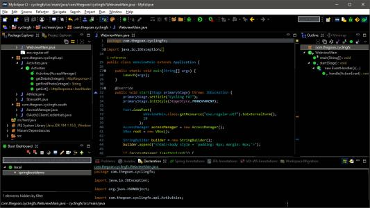

软件名称：MyEclipse2017
软件版本：2017
软件大小：1.92GB
软件语言：简体中文
运行环境：Win10/Win8/Win7***
下载链接：
温馨提示：本站统一解压码为:【cyuan.space】
软件介绍：
MyEclipse，是在eclipse 基础上加上自己的插件开发而成的功能强大的企业级集成开发环境，主要用于Java、Java EE以及移动应用的开发。MyEclipse的功能非常强大，支持也十分广泛，尤其是对各种开源产品的支持相当不错。
安装步骤：
解压安装包：鼠标右击【myeclipse2017】压缩包选择【解压到 myeclipse2017】。
第一部分：JDK环境配置（若已经配置，直接跳过第一部分从第二部分开始）：
- 打开安装包解压后的文件夹，双击打开【JDK配置】文件夹。
- 根据自己电脑操作系统的位数打开对应的程序：鼠标右击【jdk-8u221-windows-64bit】（64位）或【jdk-8u221-windows-32bit】（32位）选择【以管理员身 份运行】。
- 点击【下一步】。
- 点击【公共JRE】，选择【此功能及所有子功能将安装在本地硬盘上】（这里不要更改安装位置），点击【下一步】。
- 点击【更改】可更改安装位置（建议不要安装在C盘，可以在D盘或其它磁盘下新建一个“java”文件夹。
- 软件安装中（大约需要2分钟）。
- 安装完成，点击【关闭】。
- 配置JAVA运行环境。鼠标右击【计算机】选择【属性】。
- 点击【高级系统设置】，点击【高级】】，点击【环境变量】。
- 在“用户变量”中点击【新建】，输入变量名【JAVA_HOME】，输入变量值【C:\Program Files\Java\jdk1.8.0_221】（变量值为JAVA调试环境路径，若第三步没 有更改可输入C:\Program Files\Java\jdk1.8.0_221，更改了可查看更改之后的具体路径），点击【确定】。
- 在“用户变量”中点击【新建】，输入变量名【CLASSPATH】输入变量值【.;%JAVA_HOME%\lib\dt.jar;%JAVA_HOME%\lib\tools.jar】 ，点击【确定】。
- 在“用户变量”中点击【新建】，输入变量名【Path】输入变量值【 .;%JAVA_HOME%\bin;%JAVA_HOME%\jre\bin】 ，点击【确定】。
- 点击【确定】。
- 鼠标右击桌面左下角【开始】选择【运行】，输入【cmd】点击【确定】。
- 输入命令【java -version】（（java和 -version 之间有空格）按【Enter】键。
- 输入命令【javac】按【Enter】键，出现以下信息说明配置成功。如果出现其他文字，说明配置失败，你可能需要从第9步重新配置。
第二部分：安装MyEclipse2017
- 双击开的解压后的【myeclipse2017】文件夹。
- 鼠标右击【myeclipse2017】选择【以管理员身份运行】。
- 点击【Next】。
- 勾选【I accept……】，点击【Next】。
- 点击【Change】可更改安装位置（建议不要安装在C盘，可以在D盘或其它磁盘下新建一个“myeclipse2017”文件夹。注：安装路径中不能有中文），点击 【Next】。
- 根据自己电脑操作系统的位数选择32位或64位，然后点击【Next】。
- 软件安装中（大约需要3分钟）。
- 取消勾选【Launch MyEclipse 2017 CI】，点击【Finish】。
- 打开解压后的【myeclipse2017】文件夹中的【激活文件】文件夹。
- 双击【Patch】文件夹。
- 全选文件夹中的文件鼠标右击选择【复制】。
- 创建桌面启动快捷方式：点击桌面左下角【开始】图标，点击【所有应用】→找到并拖动【 MyEclipse 2017 CI 】图标到电脑桌面。
- 鼠标右击桌面【MyEclipse 2017 CI】图标选择【打开文件所在位置】。
- 双击打开【plugins】文件夹。
- 鼠标在空白处右击选择【粘贴】。
- 点击【替换目标中的文件】。
- 打开解压后的【myeclipse2017】文件夹中的【激活文件】文件夹。
- 双击打开【cracker2017】。
- 在Usetcode处输入【www.softgj.com】，点击两次【Systemld】，点击【Active】。
- 点击【Tools】选择【1.SaveProperities】。
- 激活完成,点击右上角【X】退出。
- 打开解压后的【myeclipse2017】的文件夹，双击打开【汉化】。
- 点击两次【2.获得机器码】。
- 点击【汉化】。
- 汉化成功，点击右上角【X】退出。
- 双击桌面【MyEclipse 2017 CI】图标启动软件。
- 安装成功。